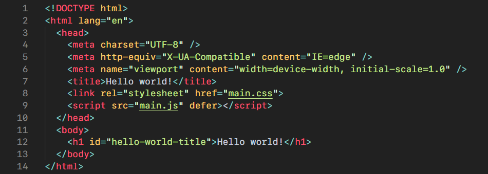
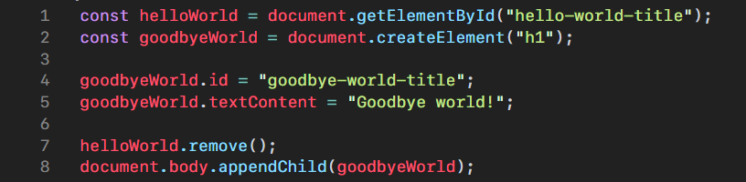
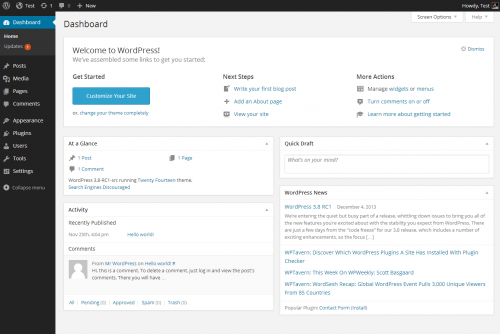
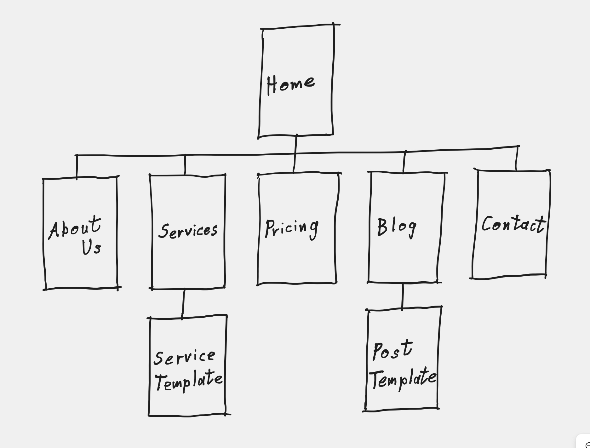
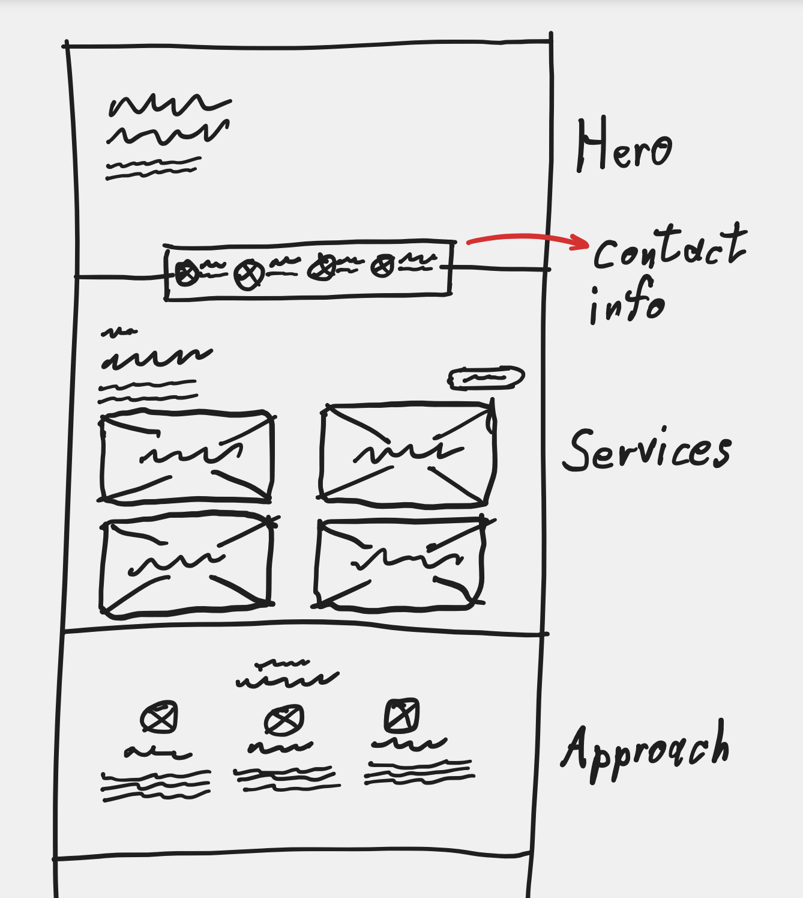
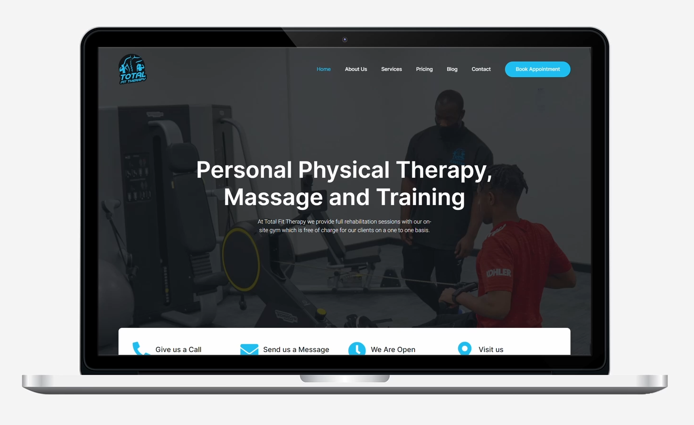
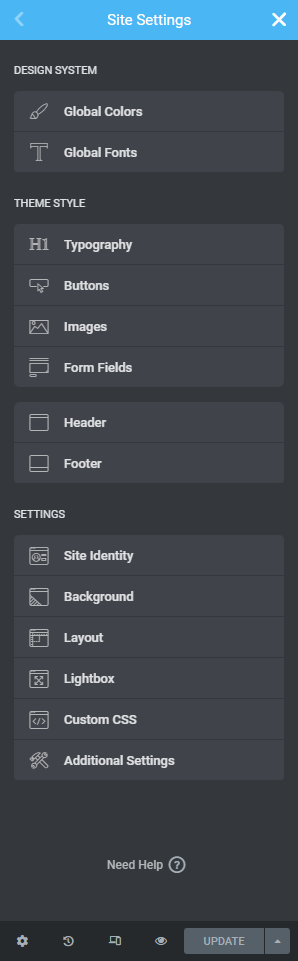

Načrtovanje in razvoj spletnih strani
SEMINARSKA NALOGA Grafična in medijska tehnika Podjetje: Rewire Digitalni Marketing Mentor v podjetju: Luka Avguštin Mentor na fakulteti: asist. Primož Weingerl, mag. graf. inž.Ljubljana, april 2022
Kazalo vsebine:
Kazalo slik:
- Slika 1: Rewire logotip in slogan.
- Slika 2: HTTP komunikacija med odjemalcem in strežnikom.
- Slika 3: HTML, CSS in JavaScript simboli.
- Slika 4: Preprost primer HTML jezika.
- Slika 5: Preprost primer CSS jezika.
- Slika 6: Preprost primer JS jezika.
- Slika 7: Osnovna arhitektura zalednega dela statične spletne strani.
- Slika 8: Osnovna arhitektura zalednega dela dinamične spletne strani.
- Slika 9: Uporabniški vmesnik sistema za upravljanje vsebine WordPress.
- Slika 10: Zemljevid spletnega mesta.
- Slika 11: Primer skice začetka snovanja domače spletne strani.
- Slika 12: Posnetek modela domače spletne strani.
- Slika 13: Nastavitve spletnega mesta, ki jih ponuja vtičnik Elementor.
Uvod
V tej seminarski nalogi bom na kratko predstavil splet in standardne spletne tehnologije ter način dela oziroma standardni operativni postopek (SOP) načrtovanja in razvoja spletnih mest v odprtokodnem sistemu za urejanje vsebin WordPress, ki sem ga ustvaril tekom opravljanja praktičnega usposabljanja v digitalni agenciji Rewire. SOP sem zasnoval tako, da je delo načrtovanja in razvoja spletnih mest mogoče z enočlansko ekipo, kjer lahko ena sama oseba prevzame vlogo večih načrtovalcev/oblikovalcev in razvijalcev, kar je zelo pogosto pri majhnih in mladih agencijah, ki nimajo veliko sredstev za zaposlitev večjih ekip, a morajo kljub temu nuditi kvalitetne storitve oziroma produkte v sprejemljivem času.
Predstavitev podjetja
Rewire je mlada in sodobna digitalna agencija, ki se ukvarja z digitalno prisotnostjo podjetij na spletu. Ta vključuje spletno mesto podjetja, ki služi kot osrednji temelj njegove spletne prisotnosti, poleg tega pa tudi ostale strategije digitalnega marketinga, kot so optimizacija za spletne iskalnike (SEO - search engine optimization) in digitalno oglaševanje na Google in Facebook platformah. Sprva je bila agencija splošna oziroma neusmerjena v ožji krog potencialnih strank. Kasneje, se je to spremenilo in je zaradi načel ter vizije ustanoviteljev postala bolj nišna in se začela osredotočati na podjetja terapevtov, zdravilcev in ostalih strokovnjakov zdravljenja z namenom pomagati ljudem, ki pomagajo drugim. Zdaj, pa se agencija v glavnem osredotoča na izdelavo spletnih mest, kot so: spletne vizitke, blogi, spletne trgovine, spletni tečaji in drugo.
Slika 1: Rewire logotip in slogan.Teoretični del
Splet
Splet je internetna storitev, ki omogoča dostop do spletnih strani z
uporabo HTTP(s) protokola. Spletna mesta pa so skupine spletnih
strani in druge vsebine, ki imajo običajno isto domeno in gostujejo
na računalniku, ki poganja spletni strežnik, kateri streže to
vsebino. Do njih dostopamo preko spletnih brskalnikov in URL
(uniform resource locator) naslovov.
Spletno mesto običajno delimo na dva dela; sprednji (frontend) in
zaledni (backend) del.
Frontend
Sprednji del je del spletne strani, ki je prisoten na uporabnikovi napravi. Torej vsebuje nekakšen vmesnik med uporabnikom in vsebino spletnega mesta. Teh vmesnikov je mnogo in jim pravimo uporabniški vmesniki. To so vse, od same strojne opreme (vhodnih in izhodnih naprav) uporabnikove naprave, uporabniških vmesnikov operacijskega sistema in druge programske opreme, pa do posameznih programov oziroma aplikacij kot so spletni brskalniki, ki jim pravimo odjemalci. Pri teh se začne uporabniški vmesnik spletnih mest, saj imajo brskalniki zelo pomembno, če ne najpomembnejšo vlogo pri prikazovanju in uporabi spletnih mest. Ta uporabniški vmesnik običajno temelji na treh tehnologijah oziroma računalniških jezikih, na katerih sloni večina današnjega spleta, in sicer: HTML, CSS in JavaScript.
Slika 3: HTML, CSS in JavaScript simboli.HTML
HTML ali nadbesedilni označevalni jezik (Hyper Text Markup Language) je osnovni gradnik spleta in je standarden označevalni jezik za izdelavo spletnih strani. Z njim je opisana struktura vsebine spletne strani. Sestoji iz zaporedja elementov, ki spletnemu brskalniku narekujejo, kako prikazati vsebino. Ti elementi so po večini sestavljeni iz začetne in končne značke, ki obdajata vsebino in s tem opišeta vsebino. Nekateri elementi, pa poleg tega, da brskalniku narekujejo prikaz vsebine, dajo vsebini tudi semantični pomen, s katerim lahko različne tehnologije lažje razumejo vsebino in s tem izboljšajo uvrstitev spletne strani v indeksu iskalnikov, pomagajo pri uporabi spletne strani s pomočjo bralnikov pri ljudeh z okvarami in drugo.
 Slika 4: Preprost primer HTML jezika.CSS
CSS ali kaskadne stilske podloge (Cascading Style Sheets) je jezik, s katerim opisujemo, kako naj se HTML elementi prikazujejo na zaslonu, tiskovinah ali katerem drugem mediju. Gre “z roko v roki” s HTML jezikom in sam po sebi ne more prikazati spletne vsebine. Z njim le stilirziramo in dodamo k obstoječi vsebini HTML dokumenta. HTML dokumentu ga lahko dodamo na tri načine, in sicer:
- vrstično (kot atribut znotraj začetne značke HTML elementa),
- notranje (kjer ga pišemo v glavi HTML dokumenta znotraj HTML elementa “style”) in
- zunanje (kjer ga pišemo v ločeni .css datoteki, ki jo povežemo s HTML dokumentom), kar pa je tudi najboljša praksa, saj omogoča poleg boljše preglednosti, tudi ponovno uporabo in reciklacijo kode drugod po spletnem mestu.
JavaScript
JavaScript je dinamičen, na-prototipih-temeljujoč, več-paradigen, eno-nitni, tolmačen oziroma JIT (just-in-time) preveden programski jezik, ki podpira objektno-orientirano, imperativno (ukazno) in deklerativno (funkcionalno) programiranje in je najbolj poznan kot skriptni jezik za spletne strani. To pomeni, da spletnim stranem nudi funkcionalnost oziroma vedenje, ki ga sama HTML in CSS nista sposobna omogočati. Kar JavaScript naredi tako popularen programski jezik je to, da mu vsak moderen spletni brskalnik oziroma odjemalec nudi gostujoče okolje v katerem se lahko izvaja koda na strani odjemalca. JavaScript danes sicer ni več omejen le na okolje odjemalca za svoje delovanje, kot skriptni jezik, saj mu orodja kot so Node.js, Apache CouchDB in celo Adobe Acrobat nudijo okolja izven brskalnika, toda to sega izven obsega sprednjega dela spletnih strani, ki je še vedno primarno področje uporabe JavaScript jezika.
 Slika 6: Preprost primer JavaScript jezika.Tako HTML, CSS in JavaScript tvorijo trojico temeljnih jezikov današnjega spleta in omogočajo strukturo (HTML), videz oziroma prezentacijo (CSS) ter vedenje oziroma funkcionalnost (JavaScript) spletnih strani. Za lažjo predstavo njihovih medsebojnih odnosov si lahko z lingvistično analogijo predstavljamo HTML kot "samostalnik", CSS kot "pridevnik" in JavaScript kot "glagol" spletne strani.
Backend
Zaledni del je del spletne strani, ki je prisoten na napravi, na kateri gostuje spletni strežnik. Spletni brskalniki komunicirajo s strežniki preko HTTP zahtevkov, ti pa odgovorijo z HTTP odzivi, ki vključujejo status zahtevka (uspešen, napaka na strani odjemalca, napaka na strani strežnika, ...) in ob uspešnem zahtevku vsebino, ki je bila zahtevana (HTML stran, slika, podatki, ...). Spletne strani z vidika zalednega dela delimo v glavnem na dve vrsti, in sicer:
Statične spletne strani:
To so strani, ki so "trdo-kodirane", kar pomeni, da vsakič, ko je
določen vir zahtevan, vrnejo enako vsebino.
Če to seminarsko nalogo berete v originalni HTML obliki, je to
primer statične spletne strani.
 Slika 7: Osnovna arhitektura zalednega dela statične spletne
strani.
Slika 7: Osnovna arhitektura zalednega dela statične spletne
strani.
Dinamične spletne strani:
Pri dinamičnih spletnih straneh pa je del vsebine, ki je zahtevana
generiran dinamično takrat, ko je potrebovan. To stori
aplikacijski strežnik oziroma zaledni del spletne aplikacije, ki
lahko za določen URL naslov vrne HTML stran s podatki iz podatkovne
baze, glede na informacije podane s strani uporabnika ali shranjene
v spletnem brskalniku.
Take kombinacije aplikacijskega strežnika in podatkovne baze so
znane kot CMS (Content Management System) ali
sistem za upravljanje vsebine .
 Slika 8: Osnovna arhitektura zalednega dela dinamične spletne
strani.
Slika 8: Osnovna arhitektura zalednega dela dinamične spletne
strani.
WordPress
Eden takšnih sistemov za upravljanje vsebine je WordPress. Je odprtokodni sistem, ki je napisan v PHP jeziku, ki služi kot aplikacijski strežnik v kombinaciji z MySQL podatkovnimi bazami. Vključuje arhitekturo vtičnikov oziroma razširitev ter sistem predlog, ki so znane kot WordPress teme. Sprva je bil ustvarjen kot sistem za objavljanje blogov, toda se je skozi leta in s široko bazo uporabnikov, ki zanj razvijajo razširitve, razvil v sistem, ki danes poganja skoraj polovico 10 milijonov najvišjih spletnih mest.
Ena največjih prednosti uporabe sistema za upravljanje vsebine kot je WordPress je ta, da je mogoče ustvariti spletno mesto s praktično neobstoječim znanjem pisanja kode. Če pa je to znanje prisotno, pa le še doda k možnostim, ki jih WordPress ponuja. Na tem mestu bi pa omenil, da po mojih izkušnjah s pridobivanjem znanja WordPress postane omejujoč in zahteva več dela oziroma energije najti način, kako nekaj narediti znotraj WordPressa, kot pa če bi to naredil razvijalec sam.
WordPress je torej odlično orodje za začetnike in enostavne projekte, toda zaradi učinkovitosti delovanja, načina dela in drugih razlogov ni prva izbira resnejših razvijalcev.
 Slika 9: Uporabniški vmesnik sistema za upravljanje vsebine WordPress.Eksperimentalni del
V eksperimentalnem delu bom ob primeru razložil svoj delokrog, ki sem ga razvil v agenciji in je postal tudi standardni operativni postopek. Delokrog imenujem "3D SOP". 3D v tem primeru ni okrajšava za tridimenzionalno, temveč za tri glavne korake: Define (definiraj), Design (načrtuj) in Develop (razvij), kateri se nadaljno delijo v tri podkorake, kateri pa se zopet delijo še v tri podkorake oziroma oporne točke, s katerimi je enostavnejše voditi projekt.
I. Define (definiraj):
a) Goals (cilje)
-
What are we doing? (Kaj delamo?)
Začnemo s tem, da jasno določimo kaj točno bomo delali. V tem primeru gre za prenovo oziroma izdelavo novega spletnega mesta terapevtske klinike iz Velike Britanije.
-
Why are we doing it? (Zakaj to delamo?)
V tem koraku razjasnimo razlog in motivacijo za projektom. V tem primeru smo želeli izboljšati predstavitev klinike na spletu in povečati promet na njihovo spletno mesto.
-
How are we doing it? (Kako bomo to naredili?)
V tem koraku določimo načine in metode, ki jih bomo uporabili, da dosežemo zastavljene cilje. V tem primeru smo določili izdelavo WordPress spletnega mesta z uporabo Elementor vizualnega graditelja spletnih strani, ki bo vsebovalo blog za boljše SEO (Search Engine Optimization) rezultate oziroma rangiranje na Google spletnem iskalniku.
b) Context (kontekst)
-
What will it contain? (Kaj bo vsebovalo?)
V tem koraku določimo vsebino, ki bo prisotna na spletnem mestu. V tem primeru smo določili:
- Besedilno vsebino o predstavitvi klinike, predstavitvi posameznih terapevtov, njihovih storitvah, njihovem pristopu, kontaktnih informacijah, objave na blogu, ceniku, pogostih vprašanjih, delovniku ter pričanjih njihovih strank.
- Slikovno vsebino za logotip, začeten pogled, posamezne storitve, prostore klinike, posameznih terapevtov, pričanja strank, objavo na blogu ter klic k dejanju.
- Video vsebino za predstavitev klinike.
- Povezave na eksterne spletne strani kot so sistem za rezervacijo, socialna omrežja in Google zemljevid.
-
Why will it contain it? (Zakaj bo to vsebovalo?)
V tem koraku razložimo in utemeljimo zakaj bo vsak posamezen del vsebine vsebovan. S tem si pomagamo in razjasnimo kaj točno, in če je določena vsebina potrebna. To nam pomaga pri razmišljanju v nadaljnih korakih načrtovanja.
-
How will it be acquired? (Kako bo pridobljeno?)
V tem koraku določimo kako bo vsebina pridobljena. Določimo, ali bomo vsebino sami ustvarili, bo za to poskrbel kdo, ki je odgovoren za ustvarjanje vsebine, ali vsebina že obstaja in se uporabi obstoječo, ... V našem primeru smo nekaj besedila ustvarili sami, za specifične informacije se je uporabila obstoječa vsebina, prav tako tudi s slikovno vsebino. Video vsebino je bilo potrebno ustvariti, povezave pa so bile že obstoječe.
c) Content (vsebino)
-
Acquire it. (Pridobi jo.)
To je po mojem mnenju eden najpomembnejših korakov. Pridobiti oziroma ustvariti vsebino v tej točki popolnoma spremeni delo in tudi končen rezultat, saj v nasprotnem primeru nadaljno delamo le neko predlogo z nadomestno vsebino, v katero naknadno vstavljamo resnično vsebino. To zelo oteži nadaljno delo in producira tudi slabši rezultat.
-
Sort it. (Razvrsti jo.)
Vsebina skoraj zagotovo ne bo pridobljena v smiselnem urejenem formatu. V tem koraku jo razvrstimo in uredimo glede na predhodne korake.
-
Optimize it. (Optimiziraj jo.)
V tem koraku vsebino optimiziramo iz strokovnega vidika. Morda je vsebina preobsežna z vidika uporabniške izkušnje, vsebino uredimo za najboljše SEO rezultate (ključne besede, pripisi k slikam, ...) in drugo.
II. Design (načrtuj/oblikuj):
a) Information (informacije)
V tem delu načrtovanja je delo še abstraktno in načrtujemo zgolj konceptualno.
-
Create the site map. (Ustvari zemljevid spletnega mesta.)
V tem koraku ustvarimo preprost pregled celotnega spletnega mesta. Določimo, katere strani bodo obstajale in njihove medsebojne relacije.
 Slika 10: Zemljevid spletnega mesta. -
Create the content hierarchy. (Ustvari hierarhijo vsebine.)
V tem koraku vsebino smiselno strukturiramo. To je seveda popolnoma odvisno od vrste in količine vsebine, toda se gre v glavnem za kategoriziranje (označevanje) in katalogiziranje (taksonomija/metapodatki) vsebine.
-
Create navigation. (Ustvari navigacijo.)
Skoraj zagotovo ima vsako spletno mesto vsaj eno obliko navigacije. V tem koraku določimo globalno navigacijo, ki konceptualno bdi nad celotnim zemljevidom spletnega mesta ter ostale morebitne podnavigacije ali lokalne navgacije.
Naj še enkrat poudarim, da je do te točke načrtovalno delo še popolnoma abstraktno. S to omejitvijo poskrbimo za resnično dober konceptualni model, ki je temelj vsake dobre uporabniške izkušnje.
b) Sketches/wireframes (skice/žične modele)
V tej točki pa se začne vizualno delo načrtovanja. Torej, dobesedno oblikovanje.
-
Create layout. (Ustvari postavitev.)
V tem koraku začnemo vizualno snovati izgled spletnega mesta. Skiciramo/izdelamo žične modele (odvisno od projekta) za vse oziroma čim več elementov spletnega mesta. Sprehodimo se čez zemljevid spletnega mesta, izdelamo postavitev vsake strani, navigacije, vsebine, ... Več kot v tem koraku premislimo in naredimo, lažje bo nadaljno delo.
 Slika 11: Primer skice začetka snovanja domače spletne strani. -
Place content into the layout. (Vstavi vsebino v
postavitev.)
Če imamo vsebino že na voljo, jo je najboljše čim prej implementirati v vizualne načrte. S tem se že v začetnih, enostavnejših fazah oblikovanja soočimo s problemi, ki lahko nastanejo pri oblikovanju, glede na vsebino.
-
Place navigation into the layout. (Vstavi navigacijo v
postavitev.)
Prav tako, kot pri vsebini, je tudi pri navigaciji boljše, da čim hitreje ugotovimo morebitne nekompatibilnosti naših idej. Enostaven primer je preobsežna globalna navigacija, ki ima preveliko število elementov, ali predolge povezave in nima dovolj prostora za horizontalno postavitev, kot smo si jo zamislili v predprejšnjem koraku.
c) Mockups/prototypes (modele/prototipe)
-
Create the graphic design system. (Ustvari grafični oblikovalni
sistem.)
V tem koraku razvijemo celoten grafični jezik spletnega mesta. Razmišljamo o barvah, tipografiji, negativnem prostoru, oblikah, grafikah kot so ikone, dekorativni elementi, ... Ustvarimo knjižnico grafičnih elementov, ki se bodo ponavljali skozi celotno spletno mesto. S tem zagotovimo konsistenten in koherenten izgled.
-
Create the mockup/prototype. (Ustvari model/prototip.)
V tem koraku izdelamo konkreten model spletnega mesta oziroma spletnih strani v načrtovalskih programih kot so Adobe XD, Figma, Sketch, ... Obsežnost in natančnost teh modelov je zopet odvisna od projekta. Z njimi lahko stranki tudi pokažemo kaj pričakovati in prilagodimo načrte preden grejo v razvoj.
 Slika 12: Posnetek modela domače spletne strani. -
Optimize the mockup/prototype. (Optimiziraj model/prototip.)
Ko je načrt dokončan, se opravijo še zadnji popravki in se ga v čim večji meri pripravi za zadnji korak - razvoj. Preveri se tehnične podrobnosti, ki olajšajo delo pri razvoju. To vključuje grafični oblikovalni sistem, pravilne nastavitve dokumenta in vsebine (ki je lahko vgrajena v dokument ali pa pripeta v ločenih datotekah), pravilne enote, ... Vse, kar se iz samega načrta prenese v končni izdelek.
III. Develop (razvij):
a) Backend (zaledni del)
-
Set up the domain and hosting. (Vzpostavi domeno in
gostovanje.)
Pri razvijanju najprej začnemo z vzpostavitvijo domene in gostovanja, kjer bo spletno mesto obstajalo Ta korak sicer lahko prestavimo tudi na konec in začnemo z razvojem na neki interni poddomeni ali lokalnem gostitelju, toda imamo manj dela s prenašanjem, če projekt vzpostavimo že na končnem gostitelju.
-
Install the CMS. (Namesti sistem za upravljanje vsebine.)
Ko imamo vzpostavljen strežnik na katerem bomo razvijali, nanj namestimo WordPress CMS. To je pri večini ponudnikov gostovanja enostavno opravilo znotraj nadzorne plošče cPanel, lahko pa ga tudi manualno prenesemo iz WordPress spletne strani in namestimo v naše okolje.
-
Initalize. (Inicializiraj.)
Ko imamo nameščen CMS, namestitev najprej inicializiramo. To vključuje brisanje nadomestnih strani in objav, preverjanje WordPress nastavitev in nastavitev administratorskega računa, teme, namestitev vtičnikov, orodij, ...
b) Frontend (sprednji del)
-
Implement the design. (Implementiraj načrt.)
V tem koraku je mišljen predvsem grafični oblikovalni sistem ter nalaganje predstavnostne vsebine na spletno mesto. Pri izdelovanju spletnih mest z WordPressom obstaja seveda veliko različnih načinov dela, ki se lahko zelo razlikujejo med seboj. V tem primeru se je uporabil vtičnik Elementor, v katerem obstaja možnost nastavljanja oblikovalnega sistema za celotno spletno mesto, ter nalaganje vsebine med samo izdelavo strani.
 Slika 13: Nastavitve spletnega mesta, ki jih ponuja vtičnik Elementor. -
Create the pages, posts, templates and menus. (Izdelaj strani,
objave, predloge in menije.)
Zaporedje teh korakov je lahko različno od mesta do mesta. V tem koraku se v glavnem izdela celotno spletno mesto po načrtu, ki je bil predhodno izdelan. Uporabi se grafični oblikovalni sistem ter vstavi vso vsebino spletnega mesta. Ustvari se tudi vsa navigacija in ustrezno poveže vsebino med seboj.
-
Add additional functionality. (Dodaj dodatne
funkcionalnosti.)
Odvisno od tega, kakšna vrsta spletnega mesta je v izdelavi, se v tem koraku dodajo dodatne funkcionalnosti, kot so sistem za upravljanje učenja (LMS - learning management system), vtičniki za spletne trgovine (e-commerce), sistem za rezervacije (booking system), ... Ta korak je zopet lahko pomešan z zgornjima, saj v praksi izdelava spletnega mesta ne poteka tako linearno, da bi lahko sledili tem korakom popolnoma zaporedno.
c) Optimize (optimiziraj)
Na koncu vsakega od glavnih korakov tega postopka je prostor za optimizacijo. To pa je zlasti najbolj pomembno pri razvoju, saj je to zadnji korak pri izdelavi spletnega mesta. V WordPressu, si za optimizacijo spletnega mesta lahko pomagamo s številnimi vtičniki, kot je npr. WP Rocket.
-
Accessibility. (Dostopnost.)
V tem koraku poskrbimo, da je spletno mesto dostopno čim večji skupini uporabnikov. S tem mislimo na uporabnike z raznimi okvarami čutil ali motoričnimi motnjami. Upoštevamo ustrezno velikost grafičnih in interaktivnih elementov, kot so besedilo in gumbi, svetlostni in barvni kontrast, alternativna besedila za predstavnostne elemente, jasno indikacijo elementa v fokusu, ...
Marsikdo rad ta korak preskoči. Toda, če ne že iz moralnega vidika, je za dostopnost vredno poskrbeti tudi iz vidika optimizacije za spletne iskalnike. -
Performance. (Učinkovitost delovanja.)
Najbolj očiten korak optimizacije. Spletna stran mora biti hitra ter odzivna. Pri optimizaciji za učinkovitost delovanja poskrbimo za čim boljše rezultate na analitičnih orodjih kot so Chrome orodja za razvijalce, GTmetrix in podobno. To, med drugim, dosežemo z ustrezno optimizacijo predpomnjenja (caching), odlaganja (deffering) raznih JavaScript funkcionalnosti, pomanjšanja (minifying) kode ter "lenega nalaganja" (lazy loading) velikih vsebin izven vidnega polja odjemalca.
-
SEO. (Optimizacija za spletne iskalnike.)
Zadnji in tudi najbolj negotov ter neskončen korak optimizacije. Včasih je bila optimizacija za spletne iskalnike celotna veda sama zase. Danes, pa nekateri trdijo, da je umirajoča obrt. To je v veliki meri posledica tega, da za rangiranjem na spletnih iskalnikih stojijo zelo kompleksni algoritmi, za katere je praktično nemogoče manualno optimizirati, kot so to počeli včasih.
Danes je SEO veliko bolj organske narave in v glavnem na rangiranje vplivata predhodna koraka optimizacije, torej dostopnost in učinkovitost delovanja. Do neke mere pripomore tudi uporaba semantičnega HTML-ja, s katerim pomagamo botom spletnega iskalnika bolje razumeti vsebino. Najbolj pomembna pa je vsebina sama, kar je popolnoma subjektivno in odvisno od ciljnih skupin spletnega mesta. Glavni cilji optimizacije za spletne iskalnike so maksimizirati stopnjo klikov (CTR - Click Through Rate) na povezavo spletne strani v spletnem iskalniku, minimizirati stopnjo odbojev (bounce rate), ter maksimizirati čas zadrževanja (dwell time) uporabnikov na spletni strani.
Zaključek
V resnici, pa delo na nobenem od projektov, ki sem jih opravljal v agenciji, ni potekalo po korakih 3D SOP delokroga. V začetku delokroga sploh še nismo imeli in je delo potekalo večinoma improvizacijsko ob konstantnem učenju o vsem, kar sem v seminarski nalogi opisal. Že od prvega dne, pa je bila ena mojih nalog ustvariti standardni operativni postopek, ki bi bil najbolj učinkovit za prihodnost agencije. Zame, je kljub vsemu stresu in frustraciji, ki sta prisotna ob sočasnem analitičnem in kreativnem delu (učenju in sočasnem ustvarjanju) bilo to praktično usposabljanje nenadomestljiva izkušnja, kjer sem razvil ogromno sposobnosti samostojnega dela in pridobil različna strokovna znanja. Za agencijo, pa je poleg vsega dela in projektov, pomembna pridobitev delokroga, ki se z vsako iteracijo izboljšuje in s tem izboljša način dela, končni rezultat ter učinkovitost dela v agenciji.
Viri in literatura
- KRUG, S. Don't Make Me Think, Revisited: A Common Sense Approach to Web (and Mobile) Usability (3rd edition). New Riders, 2014.
- NORMAN, D. The Design of Everyday Things: Revised and Expanded Edition. Basic Books, 2013.
- Learn web development. V MDN Web Docs [dostopno na daljavo]. Obnovljeno 10.4.2022 [citirano 10.4.2022]. Dostopno na svetovnem spletu: <https://developer.mozilla.org/en-US/docs/Learn>.
- HTML: HyperText Markup Language. V MDN Web Docs [dostopno na daljavo]. Obnovljeno 18.2.2022 [citirano 10.4.2022]. Dostopno na svetovnem spletu: <https://developer.mozilla.org/en-US/docs/Web/HTML>.
- CSS: Cascading Style Sheets. V MDN Web Docs [dostopno na daljavo]. Obnovljeno 13.4.2022 [citirano 13.4.2022]. Dostopno na svetovnem spletu: <https://developer.mozilla.org/en-US/docs/Web/CSS>.
- JavaScript. V MDN Web Docs [dostopno na daljavo]. Obnovljeno 13.4.2022 [citirano 13.4.2022]. Dostopno na svetovnem spletu: <https://developer.mozilla.org/en-US/docs/Web/JavaScript>.
- HTML Introduction. V W3Schools [dostopno na daljavo]. [citirano 13.4.2022]. Dostopno na svetovnem spletu: <https://www.w3schools.com/html/html_intro.asp>.
- CSS Introduction. V W3Schools [dostopno na daljavo]. [citirano 13.4.2022]. Dostopno na svetovnem spletu: <https://www.w3schools.com/css/css_intro.asp>.
- JavaScript Introduction. V W3Schools [dostopno na daljavo]. [citirano 13.4.2022]. Dostopno na svetovnem spletu: <https://www.w3schools.com/js/js_intro.asp>.
- Complete Beginner’s Guide to Information Architecture. V UX Booth [dostopno na daljavo]. [citirano 13.4.2022]. Dostopno na svetovnem spletu: <https://www.uxbooth.com/articles/complete-beginners-guide-to-information-architecture/>.
- HACQ, A. Everything you need to know about Design Systems. V UX Collective [dostopno na daljavo]. 2018 [citirano 13.4.2022]. Dostopno na svetovnem spletu: <https://uxdesign.cc/everything-you-need-to-know-about-design-systems-54b109851969>.
- Getting Started with WordPress. V WordPress Codex [dostopno na daljavo]. [citirano 13.4.2022]. Dostopno na svetovnem spletu: <https://codex.wordpress.org/Getting_Started_with_WordPress>.
- DELANEY, J. SEO for Developers in 100 Seconds. V Fireship.io [Videoposnetek] [dostopno na daljavo]. 2021 [citirano 13.4.2022]. Dostopno na svetovnem spletu: <https://www.youtube.com/watch?v=-B58GgsehKQ>.